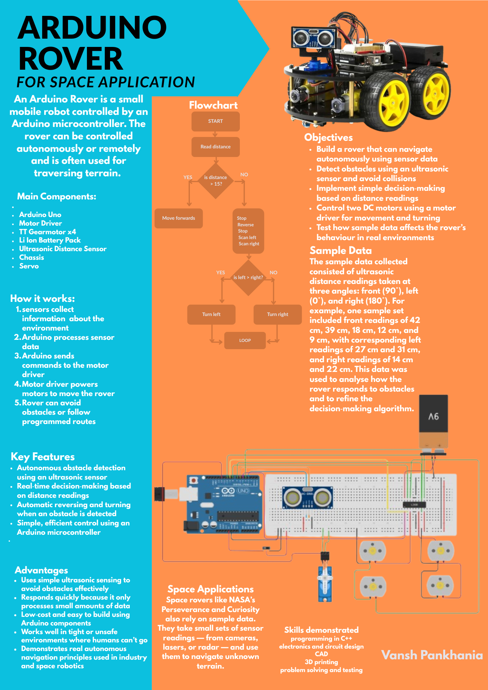

Robotics
6-DOF Robotic Arm
A six degrees of freedom arm designed to mimic the kinematics of a human arm, reaching any point within its workspace.
- Kinematics
- CAD
- Prototyping
Engineering student with interests and specialties in robotics, aerospace and mechanics.
Robotics
A six degrees of freedom arm designed to mimic the kinematics of a human arm, reaching any point within its workspace.

Robotics
A rover that senses its surroundings with ultrasonic sensors and steers around obstacles using decisions made by an Arduino.

Mechanical
A compact, high-torque, low-backlash transmission designed for smooth, controlled motion in robotic joints.

Aerospace
Designed and built a functional wind tunnel for automotive and aerodynamic testing.

Mechanical
A compact reduction gearbox using a cycloidal drive, built to give high reduction in a small space.

Aerospace
A space engineering course project designing and building model rockets.
My name is Vansh, and I have a deep passion for engineering, particularly within aerospace and robotics. In my free time, I set myself engineering projects to expand my knowledge, strengthen my theoretical understanding, and challenge my problem‑solving skills. I enjoy taking ideas from concept to reality, whether that means designing mechanisms, building prototypes, or experimenting with new technologies. These projects have shaped my curiosity and ambition, and they continue to drive my commitment to pursuing engineering at a higher level. After finishing my college courses, I am looking for a degree aprenticeship to connect with industry professionals, challenge myself in a real workplace, and to develop myself in an environment that is constantly searching for change and innovation.
Add a line on how you work: how you test, fix and improve your designs.
Subjects and predicted grades.
Key grades in maths, physics and design.
One line on what you did.
Looking for degree apprenticeships, work experience and university places in robotics, aerospace and mechanical engineering.